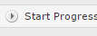
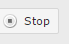
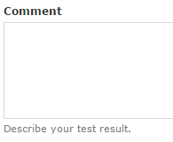
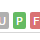
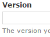
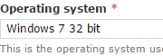
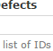
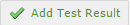
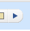

version = "AutomateG1.5" curScr = Screen(0) popat(curScr) winVariable = "" macVariable = "Mac OS X 10." + Key.ENTER + "MacBook Pro " + Key.ENTER + "Model" isWindows = popAsk("Are you testing on Windows?", version) while True: curScr.click() popup("Press OK when you have finished testing", version) curScr.click() curScr.wait() if not isWindows: curScr.click() curScr.paste(macVariable) else: curScr.click() curScr.paste(winVariable) curScr.click() curScr.click() curScr.paste("1.14.0.44") curScr.click() if not isWindows: curScr.type("Mac OS X 10.10") else: curScr.type("Windows 7 64") answer = popAsk("Did the test pass?", version) if not answer: defect = curScr.input("Please enter defect code") curScr.click() curScr.paste(defect) curScr.popup("Select test steps that failed and change Status", version) curScr.click() wait(1) curScr.click() doWeContinue = popAsk("Another test?", version) if not doWeContinue: popup("You're Winner", version) exit(1)